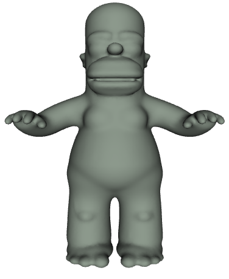
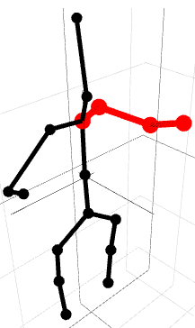
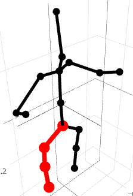
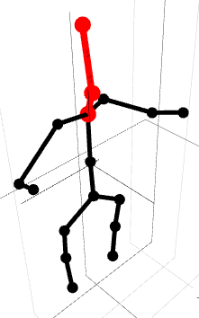
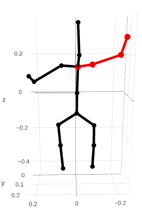
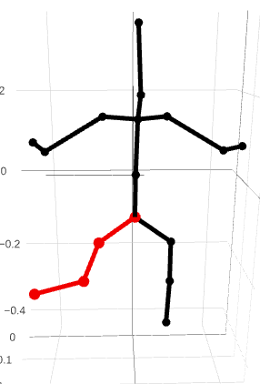
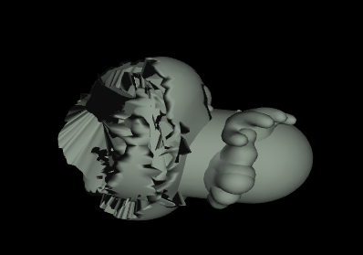

Assignment 3: Character Animation (65 Points)
Chris Tralie
Overview
The purpose of this assignment is to create a "thin slice" through a character animation pipeline completely from scratch. Students will implement the FABRIK algorithm to reorient sequences of joints to reach towards targets. They will then implement a simple rigging/skinning algorithm to move a surrounding triangle mesh of Homer Simpson along with the bones.
What To Submit
When you're finished, submit skin.js and skindebugplots.js to canvas.
Learning Goals
- Manipulate dynamic objects in Javascript
- Implement the FABRIK algorithm
- Implement skinning
- Create coordinate frames to describe the orientation/position of objects
Getting Started
Click here to download the starter code for this assignment. The entry point for running things is the file skin.html. You'll mainly be editing the files skin.js and skindebugplots.js
You can start by editing code in the main method of skin.js. Right now, the code plots the joints as a point cloud in the debugging area at the bottom of skin.html, using the plotJoints method in skindebugplots.js, as shown below:
This code uses the plotly library. You should study this example closely, because it will help you to debug as you go along.
I've provided a method plotSkin for another example. If you uncomment the line plotSkin(X); in main, it will plot the dense point cloud of all of the skin vertices on the homer mesh colored from front to back, as shown below
Eventually, you'll update the full surface mesh of homer by providing specific information to the mesh class:
but you should plot a lot of stuff in the debugging area as you go along to check incrementally to make sure each step is working as you expect (some tasks will require you to make methods to do this).
Suggested Timeline
- Create and plot skeleton by Wed 10/5
- Leaf nodes / chains / FABRIK by Fri 10/7 / Sat 10/8
- Local coordinate systems by Mon 10/10
- Nearest neighbors and local coordinates by Wed 10/12
- Animation by Fri 10/14 (final deadline!)
Part 1: Data Structure Initialization And FABRIK
For the first part, you'll implement the FABRIK algorithm that we discussed in class, treating leaf nodes of a skeleton tree as end effectors. You can find more info about the FABRIK algorithm at this link
Create And Plot Skeleton Tree (10 Points)
I've provided a skeleton for the homer mesh that I made in blender in a file called rigs/homerskel.json, which is passed into the main via a variable called skeleton. This has all of the information to build the skeleton, but it's not in the most convenient format to perform FABRIK. Your first task is to drill through this object it into a data structure more amenable to traversal.
Your Task
Create data structures for your tree, and initialize the tree with information from skeleton. Then, create a method called plotSkeleton in the file skindebugplots.js that takes your skeleton as a parameter and plots all of the bones. Below is an example of what such a plot might look like:
Hints/Suggestions
I started you off with a class called Joint that you can use to store each joint, though you can feel free to modify this. The easiest way to setup your tree for quick querying later is to store an object of joints whose keys are the name of the joints.
Identify Leaf Nodes / Create Chains (7 Points)
Your next task is to mark the leaf nodes in the joint tree if you haven't already, and to make a method getChain that extracts a list of joints starting at a chosen leaf node and ending at a subbase, or a joint with more than one child. Also create a method plotChain in skindebugplots.js that plots a chain in red on top of the skeleton. Below are a few examples:
Right_Forearm |
Left_Shin |
Head |
|  |  |  |
FABRIK (10 Points)
Implement the FABRIK algorithm to move a chain that you've created above to reach towards a particular target. Below are a couple of examples
Right_ForearmMoved to a point 0.2 units above where it currently is |
Left_ShinMoved to a point 0.2 units to the left and 0.1 units above where it currently is |
|  |  |
Your Task
Create a method fabrik which takes as a parameter a chain that you created above, as well as a target vec3 and a number of iterations to go through.
Hints/Suggestions
- It's probably easier to make a single method for both forward and backward iterations, and to pass it the reverse of the chain for the backwards iterations
- You'll have to be very careful with references here. For instance, if you make the target in terms of one of the leaf joints, you'll probably want to make a deep copy that leaf joint first.
Part 2: Skinning And Animation
In this part, you will make the "skin" (mesh vertices) move along with the bones
Bones And Local Coordinate Systems (10 Points)
Create a class for bones and initialize all the bones in the skeleton in a list of bones. In the constructor, setup and store a glMatrix.mat4 matrix that transforms from bone coordinates to world coordinates. To do this, let a and b be the positions of the bones, and let wLast be the vector that comes into this bone from its parent bone. Then, create the following four vectors
- c: The center of the bone (the average of a and b)
- w: A normalized vector from a to b
- v: The normalized perpendicular projector of wLast onto w
- u: The cross product v x w
as shown in the picture below:
The transformation matrix T from bone coordinates to world coordinates should then be
\[ T = \left[ \begin{array}{cccc} u_x & v_x & w_x & c_x \\ u_y & v_y & w_y & c_y \\ u_z & v_z & w_z & c_z \\ 0 & 0 & 0 & 1 \end{array} \right] \]
Hints
- The easiest way to implement this is with recursion starting from the root and branching out, passing along w as wLast to a child bone. You can make wLast be (0, 1, 0) at the root.
-
If you use the
mat4.fromValuesmethod, be mindful that it accepts parameters in column major order. This means that your first 5 elements should be ux, uy, uz, 0, vx ... - You won't be able to fully test this until you get to the local coordinates task, so you may need to return to this later if your mesh seems wonky
Nearest Neighbors (8 Points)
For each point p on the skin, compute index of the nearest bone in your list of bones. For this, treat a bone like a line segment with endpoints a and b, and compute the length of the perpendicular projection of ap onto ab, as shown below:
If the perpendicular projection is outside of the line segment, then compute the distance to the nearest point. The example below shows where the nearest point is b
If you've done this properly and you plot the bone IDs as the color label, using the 'Picnic' colorscale, you should see something like the following:
Local Coordinates of Skin (10 Points)
Create a list of vec3 Y that contains all of the points in the mesh in the local coordinate system of their bones. In other words, transform the skin points from world coordinates into bone coordinates. This means that you will have to multiply each point by the inverse of the transformation matrix you created before (the transformMat4 of the vec3 class should come in handy here).
If you've done this properly and plot all of the points in their local coordinate system, you'll see something quite bizarre looking, as shown below:


Once this is working, make a call to the provided method mesh.updateRig(Y, boneIDs, transformations);
where Y, boneIDs, and transformations are 3 arrays with the following info:
Yis the list of skin points in their bone coordinates that you created above- boneIDs is a list parallel to
Ywhich holds the bone index each point on the skin is associated to. This indexes intotransformations transformationsis a list of the transformations from bone coordinates to world coordinates for each bone
If you've done this properly, the mesh should render back as homer again, as I've created a shader to apply the transformations to the local coordinates you sent in
Animation (10 Points)
Now that you have the rig loaded, you can move the bones around by applying FABRIK and changing the positions of the joints. You can then send an updated list of transformations to the mesh.updateBoneTransforms method. For instance, if you move the y coordinate of the Right_Forearm up by 0.2, you should see this
And here's an anatomically questionable thing you should see if you move the Left_Shin to the left by 0.2 and up by 0.1
Finally, create an animation with at least two joint chains moving. The example below shows just the Right_Forearm's y coordinate changing with the equation
\[ 0.1(1+\cos(t)) \]

As you can see, it's far from perfect, but not bad for doing this completely from scratch!
The final code you hand in should show the animation running, which proves that you've completed all of the tasks
To help get you started with the animation, here is a code snippet you can use that keeps track of elapsed time in an animation loop: